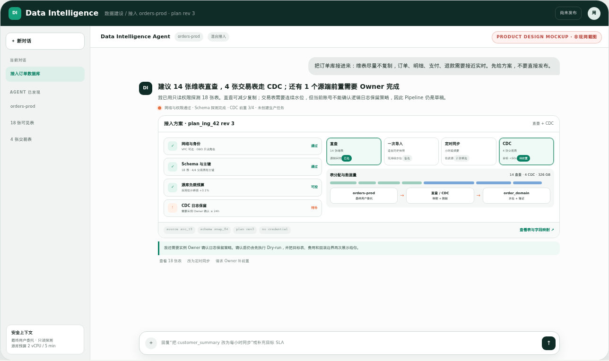
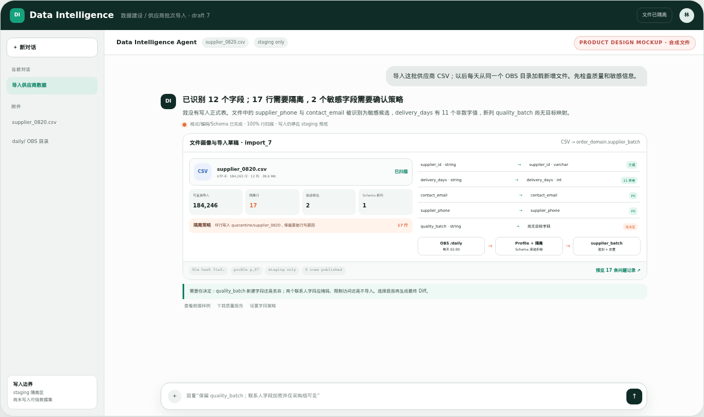
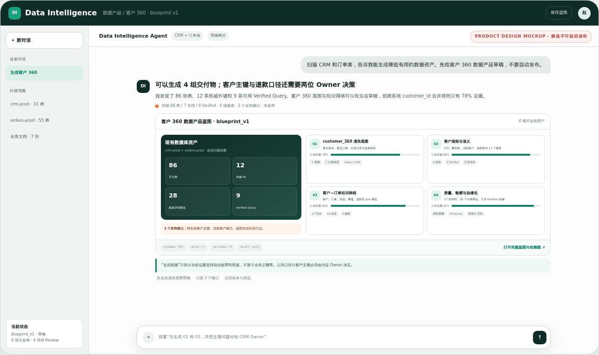
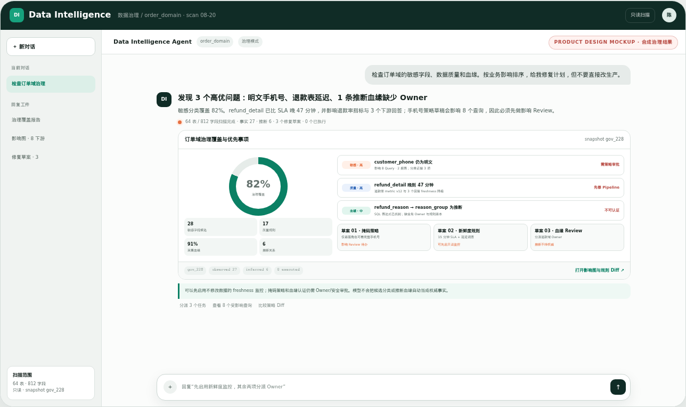
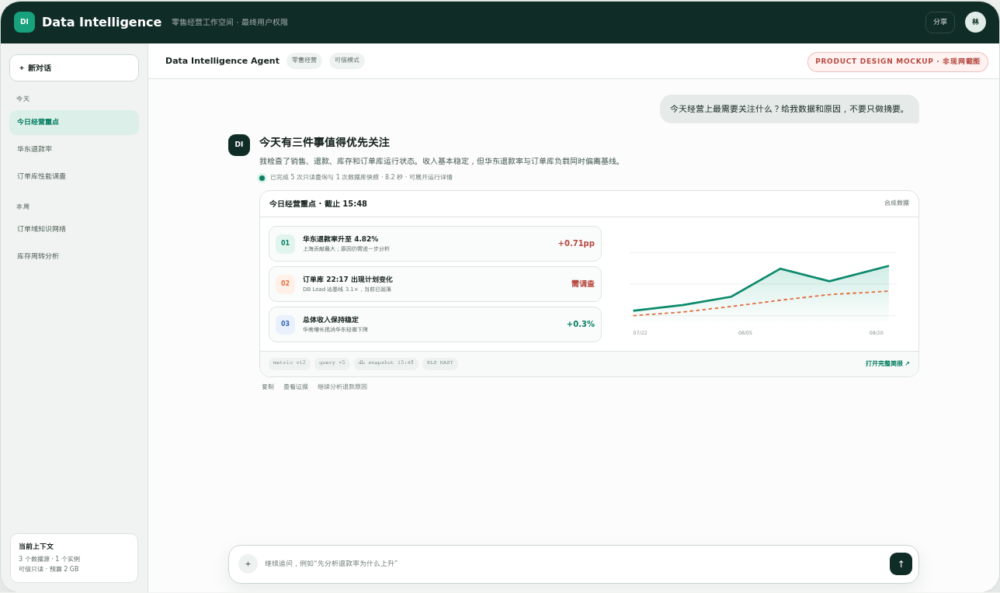
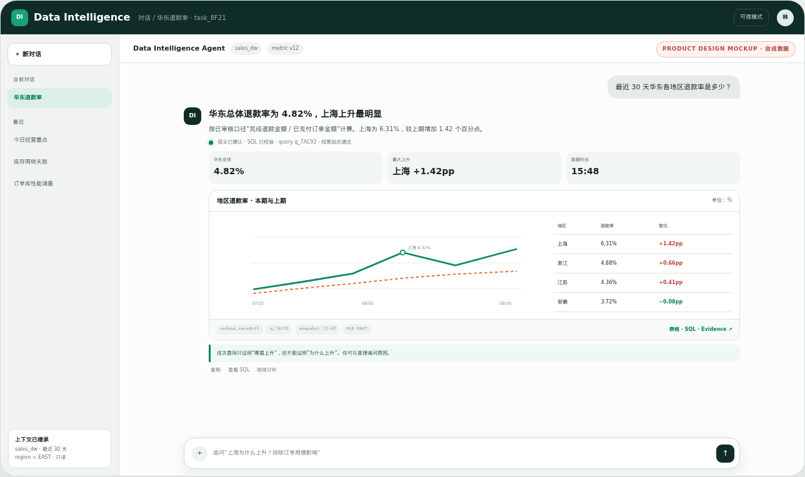
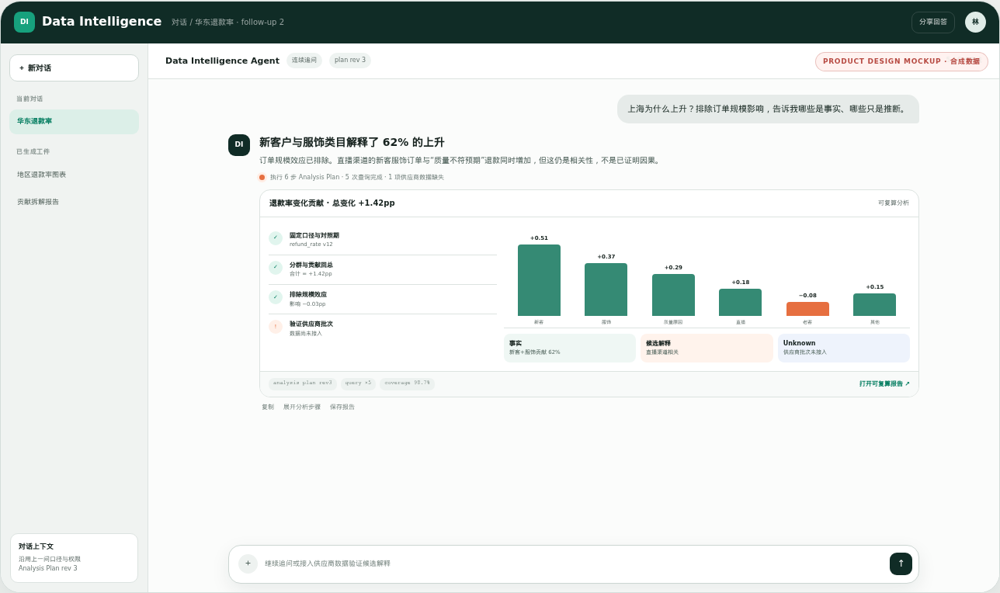
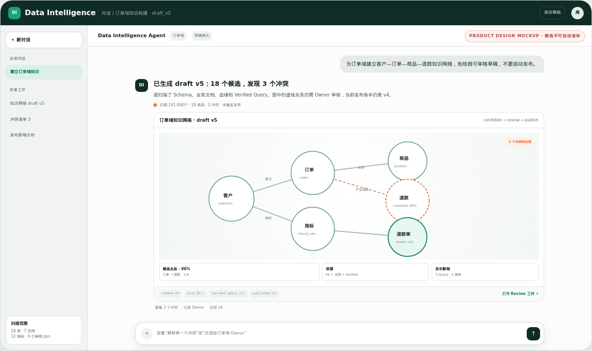
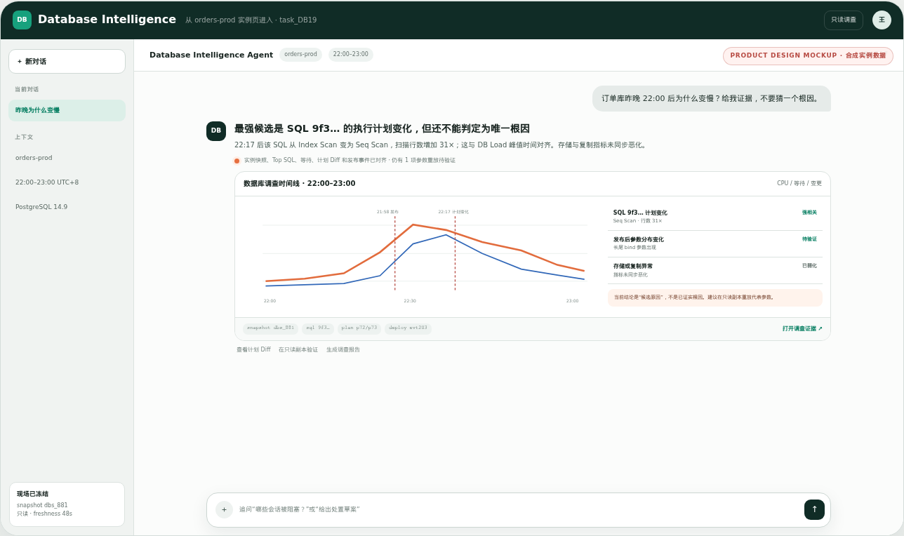
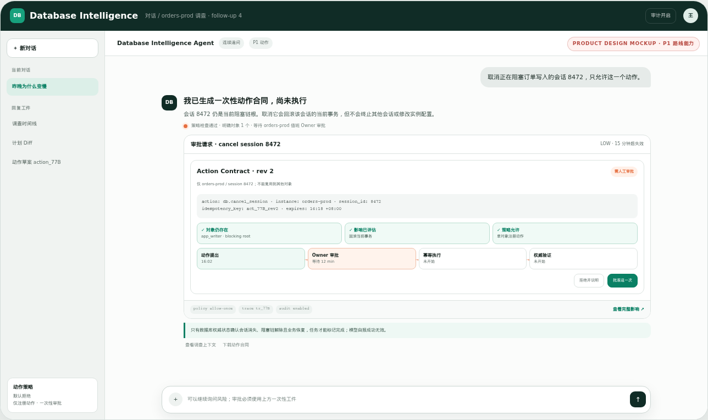

C0P0 核心 1
数据接入与准备
“维表直查、交易表 CDC，再导入这批供应商文件。”
比较直查/一次/定时/CDC，完成连接、Schema/映射、质量/敏感预检、发布与数据到达验证。
交付：接入方案 · Pipeline 草稿 · Schema Diff · 水位/验证产品首先要回答“用户能用一句话做成什么、先做哪几件”。首期串起数据接入与资产化、智能问数与分析、数据知识构建、数据库洞察，再比较公司级协作与数据库绿地两套承载方案。
产品目标不是 Goal 状态机，而是一组客户能理解、购买和持续使用的能力。首期覆盖接入数据、生成资产、管理和使用数据，再做深数据库洞察；不把调用协议当成产品卖点。
一个对话 Agent、十种回答工件。用户只描述要完成的事情，产品自动路由能力，不要求选择 Dashboard、Harness、模型或内部 Agent。
比较直查/一次/定时/CDC，完成连接、Schema/映射、质量/敏感预检、发布与数据到达验证。
交付：接入方案 · Pipeline 草稿 · Schema Diff · 水位/验证理解口径、消歧、多轮追问、生成并执行安全 SQL。
交付：表 · 图 · SQL · 参数 · 口径 · query_id · 证据完成趋势、对比、分群、异常、贡献和假设验证，区分事实与推断。
交付：分析画布 · 关键发现 · 证据 · 可复算报告从 Schema、样例、文档和血缘生成清洗表/视图、指标语义、实体关系、质量规则与 Verified 候选。
交付：数据产品蓝图 · 知识网络 · 语义/规则草稿 · Review查询实例、容量、Top SQL、锁、等待、计划、指标和变更，形成证据调查。
交付：体检/调查报告 · 时间线 · 候选原因 · 建议P0 完成资产发现、分类/质量/血缘候选和可审核计划；P1 扩跨源策略、生命周期与受控修复。
交付：资产清单 · 覆盖报告 · 影响图 · 待审批 Diff形成动作方案，经策略和人工审批后幂等执行，从权威系统验证结果。
交付：审批 · 执行 · 后置验证 · 补偿/回滚证据由指标、质量或数据库事件触发调查、解释、订阅和下一步建议。
交付：主动洞察 · 告警调查包 · 周期报告 · 动作草案这是设计优先分，不是当前产品能力分；按客户价值、华为差异化、飞轮价值、可交付性、安全可控和多入口复用加权，待内部基线重算。
| 能力 | 方案一优先分 | 方案二优先分 | 裁决 |
|---|---|---|---|
| C0 接入准备 | 94 · #1 | 91 · #2 | 首次价值、数据新鲜度和所有后续能力上限 |
| C1 智能问数 | 91 · #3 | 86 · #3 | 高频入口，直接检验知识/权限/SQL 全链 |
| C2 智能分析 | 88 · #4 | 73 · #5 | 公司级高价值；DB 首期只做基础分析 |
| C3 知识构建 | 92 · #2 | 82 · #4 | 从已有库生成数据产品，形成准确率飞轮 |
| C4 DB 洞察 | 84 · #6 | 95 · #1 | DB 权威上下文形成最强差异化 |
| C5 智能治理 | 87 · #5 | 68 · #6 | 发现/质量/敏感/血缘前移；完整治理分阶段 |
| C6 安全行动 | 61 | 64 | 等只读、审批与后置验证成熟 |
| C7 主动智能 | 68 | 70 | 长期能力，依赖知识/事件/评测 |
一句话比较直查/导入/定时/CDC，完成 Schema、质量/敏感预检和数据到达验证，再生成可用资产候选。
找到正确数据与口径，安全查询并完成趋势、对比和贡献分析，交付表图、SQL 和证据。
生成清洗视图、指标、关系、质量规则和 Verified 草稿，经 Owner Review 后服务问数与治理。
一句话查实例、运行状态和慢 SQL/锁/等待/计划变化，形成证据时间线与处置建议。
维表直查，交易表 CDC；先给方案。路径比较、映射、Pipeline 与前置缺口
导入 CSV，以后每天从 OBS 增量加载。Schema、坏数、敏感、目标与调度
扫描 CRM/订单库，生成客户 360 草稿。清洗视图、指标、知识、质量和血缘
检查敏感、质量和血缘，给修复计划。覆盖度、影响、任务和待审批 Diff
上季度各产品线收入和毛利率是多少？表图、口径、SQL、时间和证据
收入下降来自哪些客户？排除汇率影响。贡献拆解、假设、反证和报告
为订单域建立客户、订单、商品、退款知识网络。关系图、指标/Join 候选、冲突和缺口
这个实例容量、复制延迟和最近变更怎么样？实例状态、趋势、异常和证据
昨晚 22 点后订单库为什么变慢？SQL/锁/等待/计划/变更时间线
DB 直查、文件导入、资产草稿、问数和查库。
接入准备、智能问数、基础分析、数据库洞察。
一个域可生成、Review、发布资产/知识/规则草稿。
智能治理、外部 Agent、知识版本和极少安全行动。
主动智能、跨域知识、行业包和更多可验证行动。
选择单方案视图后只显示该方案覆盖列。
| 产品能力 | 方案一 · 公司竞争力 | 方案二 · DB 绿地 |
|---|---|---|
| C0 接入准备 | 首要：DataArts 多源、批/实时/CDC、Catalog 与权限的对话任务 | 首要：一个 DB + CSV/Parquet；直查/快照先闭环 |
| C1 智能问数 | 首要：多源业务问数与 BI Artifact | 首要：直接查询数据库业务数据 |
| C2 智能分析 | 首要：趋势/对比/贡献/异常到复杂分析 | 服务问数和 DB 调查的基础分析 |
| C3 知识构建 | 核心壁垒：企业级语义/知识生命周期 | DB 域知识草稿 + DataArts Adapter |
| C4 DB 洞察 | 数据库团队交付版本化能力包 | 第一差异化：查库、诊断、证据和处置 |
| C5 智能治理 | P0 发现/质量/敏感/血缘；P1 跨域策略和生命周期 | P0 DB 域候选与计划；不复制企业治理平台 |
| C6 安全行动 | 逐步扩到跨域审批和权威验证 | 先取消 Query/Session，再逐个扩展 |
| C7 主动智能 | 跨数据/数据库事件的长期能力 | 聚焦 DB 异常、容量和慢 SQL 调查 |
产品能力定义客户买到什么；功能模块组织完整旅程；原子域通过同一套 CLI/MCP 被 Harness 调用。三层不能互相代替，也不重复建栈。
| 产品能力 | 主要功能模块 | di 原子域 | 禁止重复建设 |
|---|---|---|---|
| C0 接入准备 | Path Advisor、连接/Schema/Profile、映射、Pipeline 预览/发布、水位验证 | 身份 · 数据源 · 接入 · 目录 · 质量 | 只负责聊天的“接数 Agent”；每源一套 UI |
| C1 智能问数 | 数据发现、语义解析、Verified、NL2SQL、SQL Guard、表图证据 | 身份 · 目录 · 语义 · SQL · 工件 | 与分析分离的 SQL、权限和工件栈 |
| C2 智能分析 | Analysis Plan、趋势/比较/分群/贡献、假设验证、报告画布 | SQL · 结果分析 · 质量 · 工件 | 脱离证据的通用总结 Agent |
| C3 知识构建 | 资产盘点、清洗视图/指标/知识/Verified 草稿、Review、发布和回滚 | 目录 · 接入 · 知识 · 语义 · 质量 · 保证 | 只存在 Prompt 中、不可版本化的“记忆” |
| C4 DB 洞察 | 实例状态、体检、Top SQL、锁/等待、计划/指标/变更时间线 | 诊断 · SQL · 保证 · 工件 | 让通用 SQL 猜测实例事实 |
| C5 智能治理 | 资产发现、分类、质量、血缘、影响、Schema 漂移、策略和 Owner Workflow | 目录 · 接入 · 知识 · 质量 · 保证 | 首期重建完整治理平台；模型无 Review 改生产 |
| C6 安全行动 | Action Plan、策略、审批、执行、后置验证、补偿 | 动作 · 诊断写操作 · 保证 | Harness 直连权威系统自由写入 |
| C7 主动智能 | 订阅、触发器、异常调查、周期报告、动作草案 | 质量 · 诊断 · 工件 · 动作 · 保证 | C1–C6 未稳定前建设复杂自主多 Agent |
这个修正来自重新核验 Databricks 与阿里云官方资料：对话式接数已是直接竞争基线；领先产品必须在同一线程继续完成资产化、治理和验证，而不是只给运维/咨询建议。
以下都是官方声明，不是本轮账号实测。产品状态、Region、Edition、连接器动作与性能必须逐环境核验。
| 细粒度能力 | Databricks · 官方声明 | 阿里云 DataWorks · 官方声明 | 华为领先目标 · 建议 |
|---|---|---|---|
| 对话创建接入 | Lakeflow 向导/API + Genie Code 数据工程；未证明 Genie One 已独立承担所有接入操作 | DI Agent 明确支持单表/整库、离线/实时的自然语言创建与管理，确认后发布 | 同一消费对话直接生成接入草稿，专业向导只是可展开工件 |
| 外部数据库路径 | Unity Catalog 下联邦只读；另有查询接入和托管 CDC | ChatDB 探索已接数据源；批/实时、全量/增量/整库同步 | Agent 比较直查/一次/定时/CDC，不因一句“实时”盲选 |
| 文件与 Schema | Auto Loader 推断、演进并保留异常字段；覆盖对象文件格式 | DI Agent 描述结构化/非结构化 ETL、标签/转写/摘要/向量化 | 新列、坏行、类型冲突与 PII 先预览；隔离而非静默丢弃 |
| 资产发现 | Discover/Catalog Explorer、样例、权限、自动血缘和认证信号 | Data Map 搜索、详情、预览、血缘、分类与数据专辑 | 搜索只是入口；Agent 直接回答“这个库能生成什么数据产品” |
| 质量与敏感 | 质量异常/画像；Agentic 分类和标签；可联动 ABAC 掩码 | 治理 Agent 可扫描、生成治理/SQL Diff、确认执行并复检 | 发现/草稿 P0；策略/修复必须影响分析、审批和权威复检 |
| 准备负担 | Unity Catalog、Serverless、连接/权限与源端 CDC 前提；连接器状态/区域不一 | 需购买 Data Agent、Serverless 资源组、数据源/网络；版本与增值模块影响治理能力 | 回复显式分栏“产品已完成 / 用户待补 / 当前不可用”，不卖裸连接器数量 |
Lakeflow Connect、Federation、Auto Loader、Unity Catalog 发现/血缘/质量/分类和 metric views 形成强底座。接入配置仍分布在多个专业面，给华为留下“一个对话连续交付”的空间。
DI Agent 已明确展示自然语言创建/管理同步和 ChatDB；治理 Agent 生成计划/Diff、确认后执行并复检。它已经不是“只有 Quick BI 问数入口”的旧基线。
| 可生成对象 | 自动生成到什么程度 | 用户必须补什么 | 何时才可发布 |
|---|---|---|---|
| 资产清单、Schema/Profile、索引/约束、热度/新鲜度 | 高：只读扫描直接生成 | 用途与扫描范围 | 样例遵守列权限与脱敏 |
| 表/字段说明、领域归类、Owner 候选 | 中：命名/样例/文档推断 | 组织术语、职责 | Owner Review；推断标签保留 |
| 清洗表/视图、客户 360、主题数据产品 | 中：生成蓝图与 Pipeline 草稿 | 粒度、SLA、成本、保留 | Dry-run + 质量 Gate + 回滚计划 |
| 指标/维度/Join、知识网络、Verified Query | 中：从结构/样例/历史查询生成候选 | 权威口径和例外 | 结果等价 Gold + 语义 Owner Review |
| 质量规则、敏感分类、掩码/访问策略 | 中高：规则/分类/策略 Diff | 合规等级、误报与豁免 | 问题样例、影响分析与审批 |
| API/共享数据集、特征/向量/RAG 索引候选 | 中：生成消费合同草稿 | 消费者、更新频率、ACL、模型用途 | 数据产品 Owner + 安全/成本 Gate |
连通/能力/负载与四路径比较；Schema/Profile、映射、质量/敏感预检；版本化 Pipeline、停止/恢复、目标验证和资产草稿。
批准身份、网络、用途、驻留、SLA、成本、主键和业务口径；裁决敏感等级、误报、Owner 与生产发布。
长期密码进 Harness；静默丢列或污染可信表；模型自报成功却无目标证据；自动发布推断血缘、指标或访问策略。
源/目标身份、Schema 版本、行数/校验和或水位、坏数策略、Pipeline 状态和审批记录都能由权威接口复核。
方案差异不只是组织名称，而是接入/资产/治理做到多广多深、由谁承载、入口、Owner、硬依赖、首期部署和风险不同。顶部“全篇”切换会隐藏另一方案的架构、专属模块和路线内容。
| 决策维度 | 方案一 · 公司竞争力 | 方案二 · DB 绿地 |
|---|---|---|
| 能力中心 | C0 多源接入 + C3 数据产品 + C1/2 问数分析 + C5 治理；C4 DB 洞察为强能力包 | C4 DB 洞察 + C0 单库/文件接入 + DB 上的 C1 问数；C3/5 做轻量资产治理 |
| 产品边界 | 多源接入、数据产品、问数分析、知识治理、数据库洞察 + 多入口嵌入 | 一个 DB + CSV/Parquet 的直查/快照、资产草稿、问数分析、查库/诊断 |
| 唯一 Owner | 公司级 Data Intelligence 总 Owner | 数据库部门产品 Owner + 端到端小队 |
| 入口 | 人：统一对话并嵌入 DataArts/DB；Agent：CLI/MCP/API | 人：独立对话 + DB 实例页嵌入；Agent：CLI/MCP/API |
| 架构 | 统一对话入口 + 控制面 + 可替换 Harness + 多部门能力包 | 对话 Web + 模块化单体 + 隔离 Runner + DB Tool Gateway |
| 硬依赖 | 只依赖签署契约与 SLO 的共享 DataArts/DB/IAM 能力 | ECS、模型端点、一个 DB 只读/导出接口、OBS/文件；其余为 Adapter |
| 首期部署 | 单 ECS 纵向样例验证；正式承载按公司服务 Gate 与 SLO 演进 | 单 ECS Docker Compose；无 HA/SLA，但安全和证据完整 |
| 接入/资产/治理 | DataArts/DRS 作为执行与权威对象；产品补对话规划、预览、验证和连续任务 | ingest-lite + Git/PostgreSQL 资产包；P0 无通用 CDC/连接器平台 |
| 语义/BI | DataArts 通过稳定 ID、版本、ACL、事件 Gate 后权威承载 | Git YAML/SQL + Verified Query 起步，未来适配 DataArts |
| 数据库深度 | 高，取决于数据库能力包在共同 Backlog 的优先级 | 最高且直接可控 |
| 组织依赖 | 高：总 Owner、共同 OKR、能力包、同一发布列车缺一不可 | 中低：需要数据库部门拥有小队、预算和发布权 |
| 主要风险 | 名义协作，实际多入口、多状态、每个部门各自完成 | 范围膨胀成通用平台，临时实现长期固化 |
| 转换路径 | 组织 Gate 不成立就退回方案二，技术样例不停 | 公司条件成熟后替换承载模块，协议不变，升格方案一 |
总 Owner、共同预算/OKR、能力包契约、真实 OBO 和同一发布列车全部可执行。
一台 ECS、一个主引擎、CSV/Parquet，跑通“接入—资产—问数—查库”纵向故事，不等待“大平台”。
用户始终留在同一条对话线程；接入方案、Pipeline、资产蓝图、治理报告、图表、知识图、诊断时间线和审批卡都是 Agent 回复里的结构化工件，来源、Diff 与运行证据作为附件展开。
新增的前四种回答覆盖接数据库、导入新数据、从现有库生成数据产品和治理；后六种继续覆盖问数、分析、知识、DB 调查与动作。两种方案承载位置不同，Task/Session、权限、事件、工件合同不变。










不能把接数 Agent、DataArts Agent、DB Agent 和治理 Agent 拼在首页。所有入口恢复同一 Goal/Task/Session；领域团队保留权威对象，但通过统一 Tool、Artifact 和 ID 合同进入产品。
数据库部门直接拥有 Goal/Task、入口、Session、Harness Adapter、接入/Tool Gateway、资产/DB 证据和评测。DataArts、AgentArts 等是可选 Adapter，不是启动依赖。
ingest-lite 做一个 DB 直查/快照和 CSV/Parquet；Git/PostgreSQL 承载 Profile、知识/语义/治理草稿。能力名称、Harness、Session、Runner、`di`、接入/资产/知识合同、Artifact 和 Eval 不在这里，因为它们不能分叉。顶部选择单一方案后，本节只显示该方案专属内容。
解决跨部门产品化和统一发布问题。
解决小队低依赖起步和 DB 领域闭环问题。
ingest-lite一个 DB 的直查/快照 + CSV/Parquet；Schema/Profile、坏数隔离和目标端验证。分数只衡量官方资料可见的工程适配，不包含真实任务质量。任何越权、凭据泄漏、取消无效或无法锁版本都直接淘汰。
无头 HTTP Server、OpenAPI 3.1、Session/Event/Permission/Abort 与官方 SDK，最接近“统一对话壳 + 可编程 Server”。
ACP、JSON-RPC、HTTP+SSE 共用 Agent Core，Skills/MCP/IM/headless 完整；但首发必须关闭不需要的记忆、自学习与插件面。
App Server 的 Thread/Turn/Event/Approval/Interrupt 非常适合产品嵌入，exec 也有 JSONL 与 Resume。
JSONL RPC、AgentSession SDK 与扩展协议非常干净，单机部署轻。官方明确无内建文件/进程/网络权限系统。
Session、Hooks、Skills、MCP、审批、部署与流事件完善；面向产品必须走 API key 和商业条款，不能借个人登录额度。
SessionEvent、Tool Pipeline、Sandbox/Approval 与插件缝很有长期潜力，Web/headless/Python SDK 齐全。
六个候选各跑 3 个只读任务；核验无头、事件、会话、工具、取消、许可和锁版本。
前三名在同一 ECS、模型、Skill、`di` Tool 与快照上跑 20 Tasks × 3。
主选进入产品；备选每日契约回归；其余只保留 Adapter 设计，不进入发布物。
这是执行保障，不是产品能力清单。Adapter 翻译 Harness 私有协议；Gateway 固定 capability、Goal revision、身份、状态、验证和权威终态。
create_task选择 capability，创建 Goal 草案、Runner 与会话submit_input补充目标上下文或回答澄清accept_goal冻结执行所依赖的 Goal revisionresume_task按 revision 恢复，拒绝静默漂移stream_event游标续流与断线重连approve_tool显式范围、期限与理由cancel_task同时中断模型、工具和 SQLexport_artifact带 Goal、ACL 与 hash 导出close_task校验终态、回收 Runner、执行保留策略{
"spec_version": "harness.events/v1",
"capability_id": "c2.smart_analysis",
"capability_version": "1.0",
"goal_id": "goal_...",
"goal_revision": 3,
"task_id": "task_...",
"session_id": "ses_...",
"seq": 42,
"type": "tool_call",
"source": { "harness": "...", "version": "digest" },
"payload": {},
"trace_id": "tr_..."
}这是数据库绿地方案的首期物理实现，不是方案一的最终拓扑。首期不用 CCE、Kafka、Temporal 或复杂微服务，复杂度集中在隔离、固定镜像、权限和可取消任务。
首期从 Schema、文档、血缘和样例生成实体、指标、关系、Join、规则和 Verified Query 草稿；推断必须带来源、置信度和状态，只有 Owner Review 后才能发布并服务可信问数。
product-pack/ ├─ manifest.yaml # Harness / di / 引擎兼容版本 ├─ skills/ │ ├─ ask-data/SKILL.md │ ├─ investigate-db/SKILL.md │ └─ build-knowledge/SKILL.md ├─ knowledge/ │ ├─ entities/customer.yaml │ ├─ relationships/customer_order.yaml │ └─ rules/order_refund.yaml ├─ semantic/ │ ├─ metrics/refund_rate.yaml │ ├─ joins/order_customer.yaml │ ├─ synonyms/zh-CN.yaml │ └─ enums/order_status.yaml ├─ verified_queries/ │ ├─ weekly_refund_rate.sql │ └─ weekly_refund_rate.test.yaml ├─ gold_tasks/ │ ├─ ask-data/ │ ├─ db-diagnosis/ │ └─ permission-negative/ └─ policies/ ├─ tool-policy.yaml └─ data-budget.yaml
问数是一条可澄清、可预算、可取消、可复算的 11 步链路；分析在其上执行趋势、对比、分群、贡献和假设验证，每个结论都绑定查询与证据。
只有只读连接、Schema 与统计即可首问；输出必须标为探索，不冒充正式指标。
绑定审批过的指标、Join、Verified Query、语义版本和完整执行证据。
需要可信模式、动作策略、审批、幂等与权威后置验证，不能由模型自报成功。
同比、环比、移动窗口、完整时间区间和异常点。
必须交付：粒度、基线、公式、query 与图表证据新老客户、地区、产品线、区间与长尾分布。
必须交付：分群规则、样本量、缺失值和权限过滤客户、产品、地区对总体变化的贡献，合计可回到总变化。
不能把贡献或相关性写成已经证明的因果事件漏斗、批次留存和人群转化。
固定事件定义、观察窗口、去重与人群口径基线、阈值、关联事件、替代解释和反证。
输出候选解释，不在证据不足时宣称根因趋势预测、置信区间和参数化情景模拟。
展示模型、假设、训练窗和适用边界单问题最多 2 次自动 SQL 修复。第 3 次失败交付诊断包；AUTH_DENIED、UNSAFE_SQL、BUDGET_EXCEEDED 不允许通过改写 Prompt 绕过。
它覆盖一句话查实例、查状态、做体检和调查故障。以“昨晚 22:00 后订单库为什么变慢”为例，Harness 组织假设，数据库权威工具提供计划、锁、等待、会话、指标和变更；相关性不能冒充已证实根因。
快照、Top SQL、等待、锁、计划差异、时间线、相关性和调查报告。证据不足时明确下一步，不生成“确定根因”。
只在事故演练通过后开放取消指定 Query/Session；必须有审批、幂等、超时、权威后置验证和审计。参数、索引、扩容、切换继续关闭。
产品没有一排能力 Dashboard，也不把接入、导入、资产、治理、问数、分析、知识和数据库拆成多套页面。用户提问后，Agent 先用语言回答，再把本次最合适的 Pipeline、治理报告、图表、知识图、时间线或审批卡嵌入回复。
订单规模效应已排除；直播渠道与退款上升相关，但供应商批次数据缺失，因此不能写成已证明因果。
每阶段按“客户能用一句话做成什么”验收，不按组件数量验收。这是待真实基线校准的建议，不是未经容量验证的承诺。
ingest-lite、Registry、Git 资产/知识包；30 分钟内起服务。Unknown 不是差距，也不是能力。必须用固定版本、目标 Region、真实身份和正负用例闭合。
前文先回答产品做什么、页面怎么运行和两种方案如何承载；这里保留 88 项统一 CLI/MCP 执行面，新增接入规划、Pipeline 与最小治理原子能力，供研发拆解和契约评审使用。
| 域 | CLI | MCP Tool | 风险 | 阶段 | 作用 |
|---|